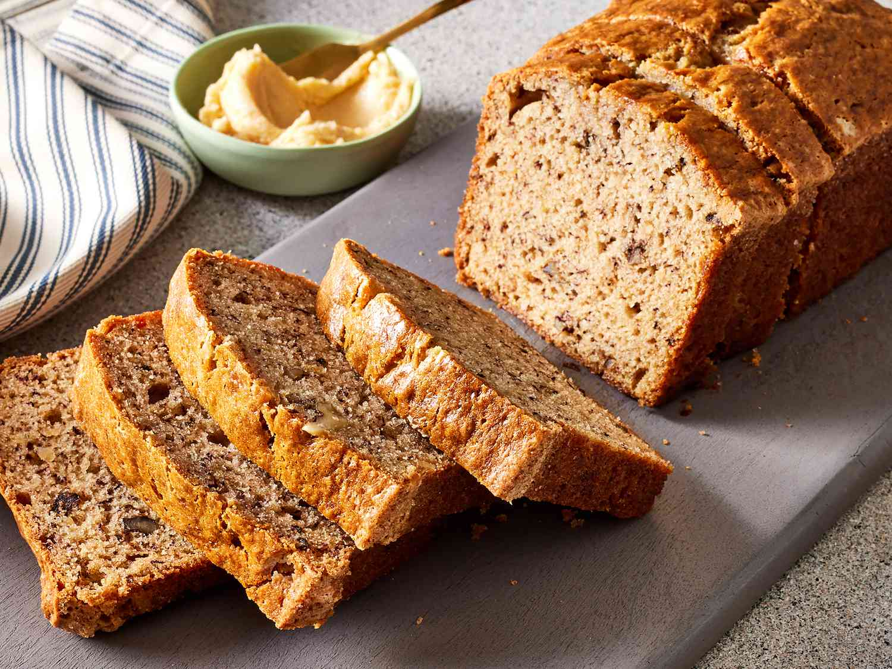

Banana bread recipe

Description:
Banana Bread is a moist and flavorful treat made with ripe bananas. It’s sweet, soft, and perfect for breakfast or a snack. With a hint of vanilla and cinnamon, this bread has a light, tender texture and a golden-brown crust.
Ingredients:
- 3 ripe bananas
- 1/3 cup melted butter
- 1 teaspoon baking soda
- Pinch of salt
- 3/4 cup sugar (or less if you prefer less sweetness)
- 1 large egg, beaten
- 1 teaspoon vanilla extract
- 1 1/2 cups all-purpose flour
Steps:
- Preheat your oven to 350°F (175°C).
- In a mixing bowl, mash the ripe bananas with a fork until smooth.
- Stir in the melted butter.
- Mix in the baking soda and salt.
- Add sugar, beaten egg, and vanilla extract; mix well.
- Gently stir in the flour until fully combined.
- Pour the batter into a greased loaf pan.
- Bake for 60-65 minutes, or until a toothpick inserted into the center comes out clean.
- Allow to cool before removing from the pan and slicing.